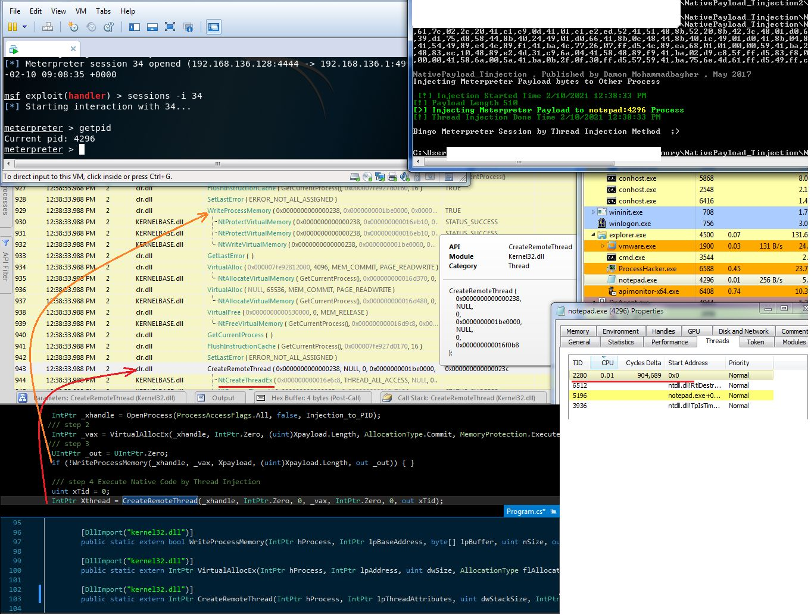

Remote Thread Injection & API Monitoring + ETW for Defenders
Remote Thread Injection & API Monitoring + ETW for Defenders
in this time i want to talk about some simple techniques for test codes, which in this case my codes are about "Remote Thread Injecion", i do not want to talk about detail of Remote Thread Injection techniques & codes in this post but i want to talk about some Points (which are important points for me), i think these things are important for (Security Researchers / Pentesters / Red Teamers) also for Defenders like "Blue Teamers" too.
some of these code made for chapter14 but in this time i want to talk about API Monitoring for codes in this case (Remote Thread Injection), as you can see my simple Code "NativePayload_Tinjection.exe" in the "Picture 1" executed and we had session & with API Monitor tool we can see what API called & executed in memory by code ...
in the "Picture 1" you can see These "WriteProcessMemory" & "CreateRemoteThread" API called in my C# Source but these API have Sub-APIs which for "WriteProcessMemory" is "NtProtectVirtualMemory" + "NtWriteVirtualMemory" also for "CreateRemoteThread" is "NtCreateThreadEx".
Meterpreter Payload Injected to "Notepad:4296" by injector and in this time our Payload Injected or Wrote to Target Process Memory via WriteProcessMemory API and Executed by CreateRemoteThread but these APIs are working with Nt* APIs like "NtCreateThreadEx" & finally TID:2280 with start-address 0x0 created in target process (Notepad) which this TID created by injector/malware & this is malware Code behind Notepad Process.

Picture 1: Classic/Simple Remote Thread Injection code
so in the "Picture 1" some API like (CreateRemoteThread) called from "Kernel32.dll" then that API by itself will call some New API Function like (NtCreateThreadEx) which is from "ntdll.dll" etc.
Note: Code for Picture 1 is here https://github.com/damonmohammadbagher/NativePayload_Tinjection
now as Security Researcher you can see what exactly happened behind code for API Functions & as Defender or Blue Teamer you can see which Native APIs Called by this code etc.
in the next "Picture 2" you can see another code which is not same with "Picture 1" but we have Same Result also almost all Native API calling is same too but C# code is not same.
(for better resolution: please click on picture)
Picture 2: Code v2
as you can see these Native APIs called from "kernel32.dll" by "clr.dll" also "Nt* Function" from ntdll.dll called by "Kernelbase.dll" and both codes almost had same result for API Monitoring.
but something is important in these two Pictures which is, in "version 2" source code i did not have [DllImport("kernel32.dll")] for "CreateRemoteThread" so codes are not same but result almost is same. so signature of v2 in hard-disk for my code is not same with "version 1" source code but result is same.
in the next "Picture 3" you can see we have New Method to call Native API Function "NtCreateThreadEx" from "Ntdll.dll" Directly without using "CreateRemoteThread" or "CreateThread" from "Kernel32.dll", which is calling [DllImport("ntdll.dll")] in source code very simple.
(for better resolution: please click on picture)
Picture 3: Calling API Function directly via ntdll.dll
As you can see now we have "NtCreateThreadEx" API Function without calling "CreateThread" or "CreateRemoteThred" etc & this Nt* API Function Called by "clr.dll" from "ntdll.dll" Directly finally Thread Created and Session established too, Now we have Different Behavior API Calling by simple code so this will help sometimes to bypass some AVs... (this time API Monitor list is not same with Picture 1 & 2), in the next "Picture 4" you can see this method worked very well and "Trend Micro" also Windows Dfender bypassed by this method simply.
(for better resolution: please click on picture)
Picture 4: Trend-Micro needs to work on this more than this ...
in the next "Picture 5" we have Syscall Test via C# code, in this case Nt* Function Called/Imported (ntdll.dll) from hard-disk Directly which means again we dont have "CreateRemoteThread" from "Kernel32.dll" etc.
(for better resolution: please click on picture)
Picture 5: C# Code for syscall.
as you can see this API Monitor list changed for this technique/code and "kernelbase.dll" called "CreateThread" & finally we have "NtCreateThreadEx" from "ntdll.dll" by "kernelbase.dll". this method is very useful for bypass av and in my lab KASPERSKY AV & Windows Defender bypassed by this method very simple with last update (2020/12). in the next "Picture 6" you can see another code for Syscall called "Dinvoke" made by (The Wover , FuzzySec)
(for better resolution: please click on picture)
Picture 6: Syscall Technique with "Dinvoke" code by "The Wover"
in this code as you can see we dont have "NtCreateThreadEx" in API Monitor list, because in this code (Dinvoke) API Functions called From Memory (Not from Hard-disk), that means load the DLL at runtime and call the function using a pointer to location in memory, so this is a trick to Bypass APIs Hook which used by API Monitor Tool for Detect Native APIs. for more information about this code and Techniques behind the code read this (https://thewover.github.io/Dynamic-Invoke/), but important point for Defender is: as you can see with this Code you can not Detect API Functions but with ETW you can Detect Thread Injection,so you can see in this "Picture 6" API Function "NtCreateThreadEx" was not found by API Monitor Tool but With "ETWProcessMon.cs" code "Remote Thread injection" Detected, and this New Thread injected into Notepad:1120 by "SyscallDemo:9800" also "VirtualMemAlloc" Address 0x230e5490000 Detected by ETW. as i said before ETW is Very useful thing for Blue Teams like this case.
at a glance: as defender (blue teams) you should work with API-Monior tools also ETW (which will help you to know these Malware Techniques better than before) & you can see in these Pictures ETW is very useful thing for Defender also Defensive tools etc. (special thanks to [LOITUMA: IEVAN POLKKA] Music, [everyday listening] ¯\_(ツ)_/¯ )